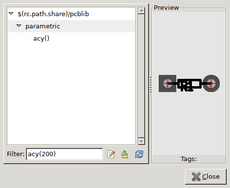
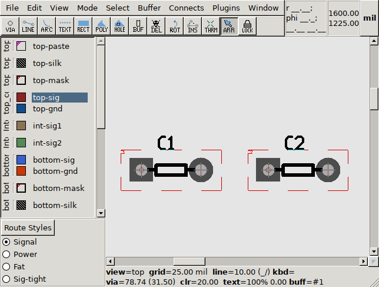
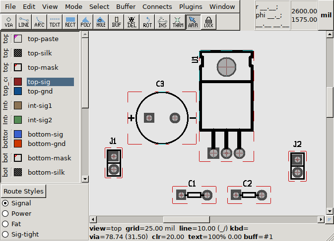
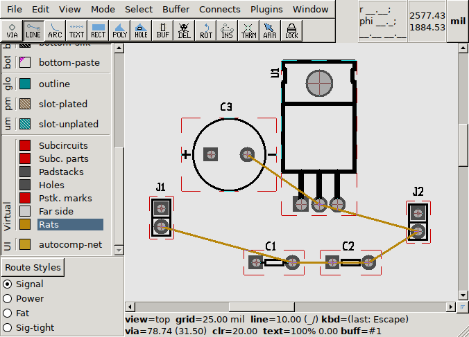
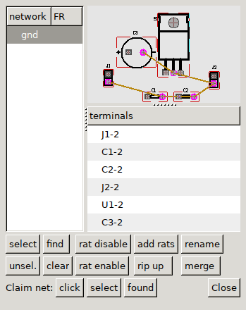

Start pcb-rnd - it will start with an empty board (loaded from the default board, as configured).
Pan: click with the scroll wheel of the mouse (or middle button) and move the mouse; alternatively use the scroll bars at the bottom and right of the editor area. Zoom: scroll wheel.
Press key w then key l (which will be written as {w l} in this tutorial). This will open the library window ({w l} is for "window, library"). The library window has a filter entry on the bottom left: enter acy(200) there and the preview on the right side will show an axial lead footprint with 200 mil pin distance. Althought a tpyical thru-hole ceramic capacitor is not axial lead, it will fit nicely in this footprint:

The footprint is in the paste buffer and the buffer tool is selected (which is visible on the overhead tool bar under the menu). Place the buffer on the board by a left click. You can exit the buffer mode by pressing the escape key or F11.
The placed footprint is called subcircuit or subc for short. The subc has a refdes (the main ID of the subc) reading "R1". Grab this "R1" with a left click and move it out from the middle of the subc and drop it near the subc so it is readable. Rename the subc to "C1" by pressing {e r} while hovering the mouse cursor over the subc body (not the refdes text); {e r} is for "Edit Refdes".
Select the subcircuit by clicking it - any point where the subcircuit has graphics would work, within the red dashed subc frame. The subc will turn cyan. Note: the refdes text is selected separately from the subc. Make sure to click on the silk screen graphics (black lines) or a pin to make the whole subc cyan, not just the refdes text.
Once selected, press {e c} ("edit, copy") which will copy the modified subc to the buffer and will select the buffer tool. Now place it next to the original subc and modify its refdes to "C2".

Place the rest of the subcircuits using the same method. It's best to keep the library window open for all these placements:

To ease laying out the board, we create a net lsit by drawing rats. Rat lines are logical connections between terminals. A terminal is a pin or pad of a component, addressed as refdes-termid, where refdes is the host subcircuit's refdes and termid is the unique temrinal ID within the subc. The drawing already has unique refdes assigned to each subc and the stock footprints we worked from already have unique terminal IDs.
Note: terminal IDs can be shown or hidden by hovering over the subc or the terminal and pressing {v n} (for "view name"). The ID shows up printed over the terminal (pin in our case) with tiny red letters - zoom in to see them. A tooltip also shows the terminal ID after hovering the mouse cursor over the terminal for a few seconds1.
Select the Rats layer on the left - it is part of the "Virtual" layer group on the bottom. Select the line tool on the overhead toolbard (second icon from the left).
Start drawing a line from J1's terminal 2 (the round one) by left-clicking it. Left click C1's terminal 2. This is a new logical connection, a new net, so a popup dialog will ask for the net name. Enter gnd and press enter.
The rat line drawing is still active from the last terminal, so go on connecting C2's terminal 2, J2's terminal 2, U1's middle terminal and C3's negative terminal. Since these connections are all extending the gnd network, no net name is asked. When finished, press esc or F11. Don't mind what your rat lines cross: only the two endpoint of a rat line matter.

Press {w n} to open the network window:

Note: you can zoom/pan the preview on the top right the same way as the main drawing. If the network selection on the left changes, the right side is updated. The preview highlights affected terminals.